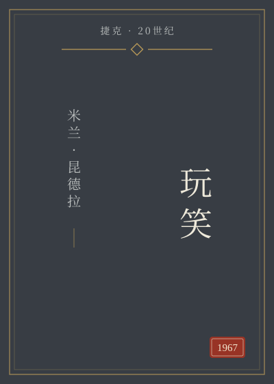
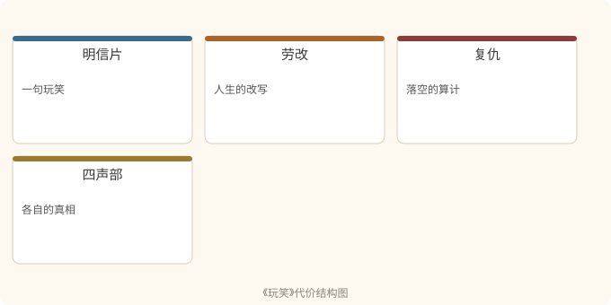

玩笑
一、基本信息
| 作者 | 昆德拉 |
|---|---|
| 成书/出版 | 1967年（作者页 B104 口径：玩笑（1967）） Milan Kundera — Encyclopaedia Britannica（百科全书） |
| 国别/地区 | 捷克 |
| 时代 | 现当代 · 20世纪 |
| 体裁 | 长篇小说 |
| 语言 | 捷克语 |

《玩笑》代价结构图（主题·结构图）
二、创作背景
作者页（B104）：昆德拉 major_works 载'玩笑（1967）'（B104 作者页定位，详见 qingzhong 条核对）。
题材（通说待核）：一个明信片玩笑毁掉卢德维克的一生——斯大林时代的布拉格。
三、内容脉络
卢德维克的玩笑明信片与'赎罪'的复仇计划（通说待核）。
四声部叙述：玩笑的代价层层反转（通说待核）。
四、主要人物表
| 人物 | 身份 | 说明 |
|---|---|---|
| 卢德维克 | 大学生 | 被玩笑毁掉（通说待核） |
| 海伦娜 | 广播员 | 复仇的对象（通说待核） |
五、主题与艺术特点
- 极权语言与个人命运（通说）。
- '玩笑'的不可逆（通说）。
- 复调叙事（通说待核）。
六、影响与评论
- 作者页：昆德拉成名作（B104 作者页口径）。
Milan Kundera — Encyclopaedia Britannica（百科全书） - 1968年后在捷克斯洛伐克被禁（通说待核）。
Milan Kundera — Encyclopaedia Britannica（百科全书）
七、阅读建议
难点
- 捷克政治史。
- 四声部的切换。
- 《玩笑》（上海译文出版社，通说待核）。
- 捷克文原版。
先《玩笑》后《不能承受的生命之轻》。
八、待核实
- 1967年出版（Československý spisovatel说）核对。
- 卢德维克/海伦娜人名核对。
- 被禁与1968年出版波折待核。
本页主要来源
昆德拉的其他收录作品：不能承受的生命之轻